Add Share Links to WordPress
 Danny Wahl
•
•
Danny Wahl
•
•
In my previous posts Ghost Share Links Cheat Sheet and Add Share Links to Ghost Themes I explained "no-cost" sharing and provided reusable code snippets in handlebars to add share links to 19 different social networks. Here they are adapted for WordPress in a single easy to use function.
tl;dr: Download WordPress shareLinks at github.
Installing
In your WordPress theme folder you can either simply add the following code to the single.php file inside of the while() loop or add it to your theme's functions.php and call it in single.php
Usage
This code provides a single function shareLinks([$sites]){} which takes an optional parameter $sites[] which is array of sites to output links. If no parameter is provided then all sites are output. For example:
shareLinks(); //All the things!
shareLinks(array("email")); //Old School!
ShareLinks(array("sinaWeibo", "renren")); //你好！
The function returns a string containing an unordered list with each site as its own list item. The list item contains an anchor with a helper class of the machine-readable site name, like so:
<ul>
<li>
<a class="stumbleupon" href="https://stumbleupon.com...">StumbleUpon</a>
</li>
</ul>
To output the list it needs to be echoed after it is called. The simplest way is like this:
<?php echo shareLinks(); ?>
Ok, now for the dev-nerd stuff...
Query Items
Different networks require/allow different query items and as such shareLinks() provides a number operators:
$share["siteTitle"]: This is a string returned fromget_bloginfo('name').$share["siteURL"]: This is a string returned fromget_site_url().$share["postTitle"]: This is a string returned fromget_the_title().$share["postURL"]: This is a string returned fromget_permalink()and then passed throughremove_query_arg()to remove the page indicator. If you want to share a specific page of a post then you'll need to remove theremove_query_arg()call.$share["postCategory"]: This is a string of all categories of the post returned fromget_the_category()and then the spaces are stripped out of category names and each category is prefixed with "#". For example if a post is categorized as "Word Press, Themes" the return would be " #WordPress #Themes".$share["postDblCategory"]: This is the same as$share["postCategory"]except categories are also suffixed with "#" as is required by some networks. For example if a post is categorized as "The Simpsons, Ralph Wiggum" the return would be "#TheSimpsons# #RalphWiggum#".$share["postExcerpt"]: This is a string returned fromget_the_excerpt()and then passed towp_strip_all_tags(): This will have "Continue Reading" at the end. If you want to remove that you'll need to add a filter to your theme.$share["postShortExcerpt"]: This is$share["postExcerpt"]: substringed to the first 90 characters for networks with shorter share limits.$share["postImage"]This is the URL of the featured image of the post. If there is no featured image for the post, then it will grab the URL of the first image attached to the post. If there are no images in the post then it is empty- which is fine.
Networks Array
Each network (facebook, twitter, etc..) is simply part of a multidimensional array. To add another network, simply create another entry in networks[]. Here's the schema of the primary array:
$networks["network-machine-readable-name"] = [
"name" => "Network Display Name",
"url" => "https://example.com/share?",
"query" => [
"foo" => $share["postURL"]
"bar" => $share["postTitle"],
],
];
The machine readable name is the helper class that's provided in the anchor, the "name" is the text output in the anchor content. This is important especially when dealing with multilingual sites, for example "Sina Weibo" is $networks["sinaWeibo"] but the display name is: "name" => "新浪微博" to change the display of the network name you would change the "name" value.
The "url" array value is where the share URL is stored- this is different for each site, but it should always end with the beginning of the query URL (i.e. ?).
The "query" array value should store another array which are the components of the URL query. These are different for each network, but can be populated with elements from the $share[] array as outlined above. For example a query array might look like this:
"query" => [
"url" => $share["postURL"],
"title" => $share["postTitle"],
"redirect" => "false",
],
Notice the last option "redirect=false". It's possible to add static elements to the query URL if they're required by the remote site. In the end this will give us something like:
url=http://example.com&title=Post Title&redirect=false
Finally, our query is passed through http_build_query() to make it URL encoded.
Examples
The following are real examples of this function in action on my wife's blog (iywahl.com) with a random post. Her site is using WordPress 4.1.1 and the "Twenty Fifteen" theme.
$networks["email"] = [
"name" => "E-mail",
"url" => "mailto:?",
"query" => [
"subject" => $share["siteTitle"] . ": " . $share["postTitle"],
"body" => $share["postTitle"] . "\r\n" . $share["postURL"] . "\r\n\r\n" . $share["postExcerpt"],
],
];
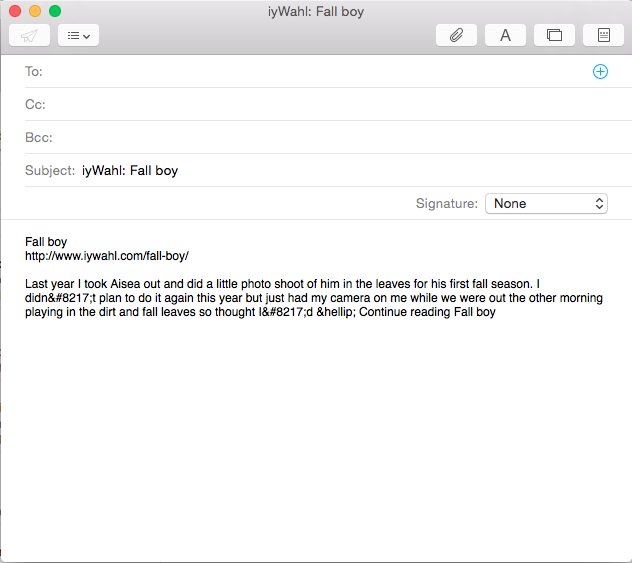
$networks["twitter"] = [
"name" => "twitter",
"url" => "https://twitter.com/home?",
"query" => [
"status" => $share["postURL"] . $share["postCategory"],
],
];
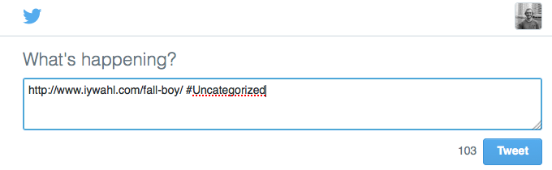
$networks["facebook"] = [
"name" => "Facebook",
"url" => "https://www.facebook.com/sharer/sharer.php?",
"query" => [
"u" => $share["postURL"],
],
];
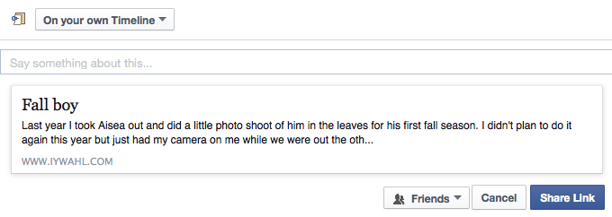
Google+
$networks["googlePlus"] = [
"name" => "Google+",
"url" => "https://plus.google.com/share?",
"query" => [
"url" => $share["postURL"],
],
];
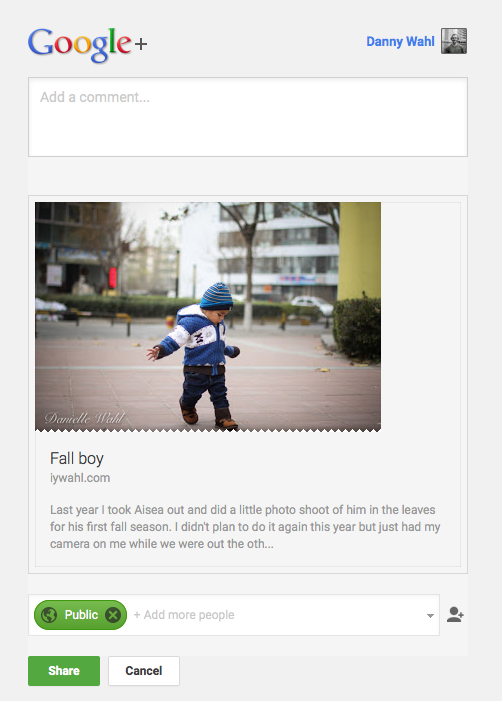
$networks["linkedin"] = [
"name" => "LinkedIn",
"url" => "https://www.linkedin.com/shareArticle?",
"query" => [
"mini" => "true",
"url" => $share["postURL"],
"title" => $share["postTitle"],
"summary" => $share["postExcerpt"],
"source" => $share["siteTitle"],
],
];
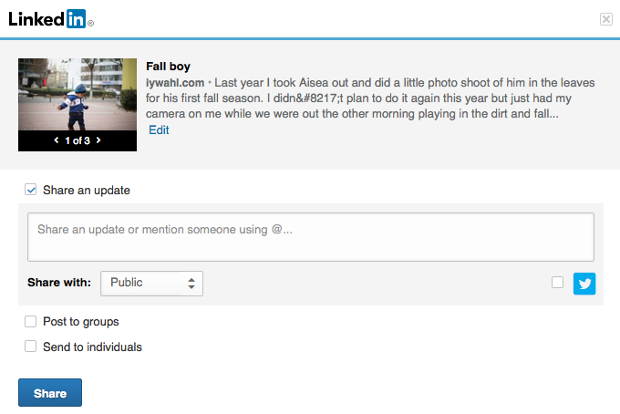
$networks["pinterest"] = [
"name" => "Pinterest",
"url" => "https://pinterest.com/pin/create/button/?",
"query" => [
"url" => $share["postURL"],
"media" => $share["postImage"],
"description" => $share["postShortExcerpt"],
],
];
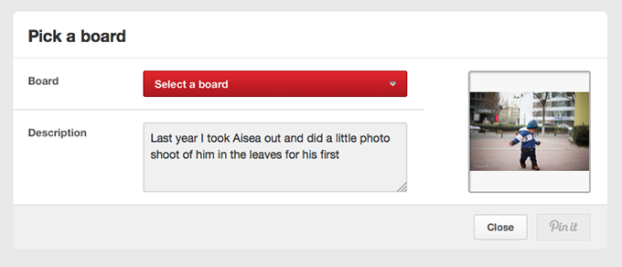
Tumblr
$networks["tumblr"] = [
"name" => "tumblr",
"url" => "http://www.tumblr.com/share/link?",
"query" => [
"url" => $share["postURL"],
"name" => $share["postTitle"],
"description" => $share["postExcerpt"],
],
];
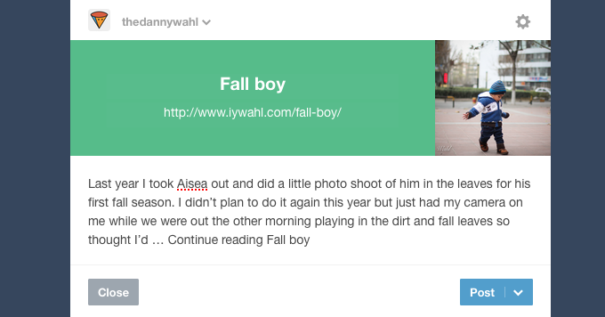
$networks["reddit"] = [
"name" => "reddit",
"url" => "http://www.reddit.com/submit/?",
"query" => [
"url" => $share["postURL"],
"title" => $share["postTitle"],
],
];
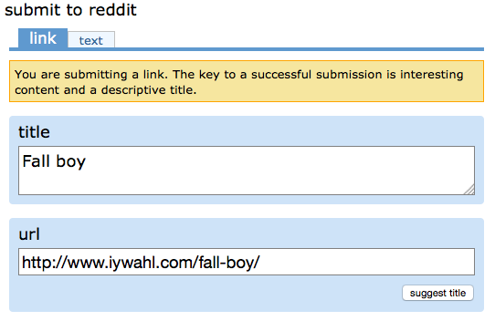
$networks["xing"] = [
"name" => "Xing",
"url" => "https://www.xing.com/spi/shares/new?",
"query" => [
"sc_p" => "xing-share",
"url" => $share["postURL"],
],
];
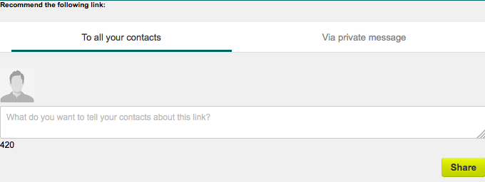
VK
$networks["vk"] = [
"name" => "VK",
"url" => "https://vk.com/share.php?",
"query" => [
"url" => $share["postURL"],
"title" => $share["postTitle"],
"description" => $share["postExcerpt"],
"image" => $share["postImage"],
"noparse" => "true",
],
];
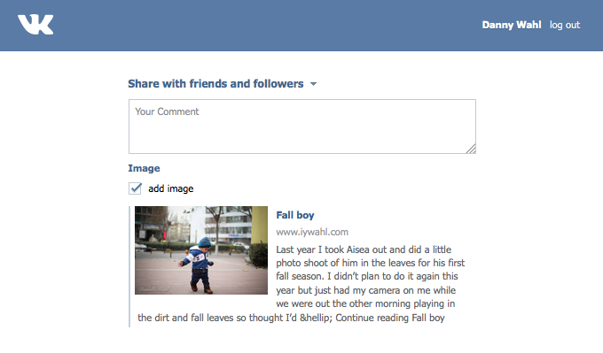
buffer
$networks["buffer"] = [
"name" => "buffer",
"url" => "https://bufferapp.com/add/?",
"query" => [
"url" => $share["postURL"],
"text" => $share["postShortExcerpt"],
],
];
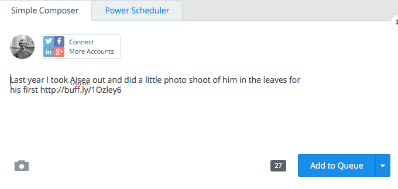
StumbleUpon
$networks["stumbleupon"] = [
"name" => "StumbleUpon",
"url" => "https://www.stumbleupon.com/submit?",
"query" => [
"url" => $share["postURL"],
"title" => $share["postTitle"],
],
];
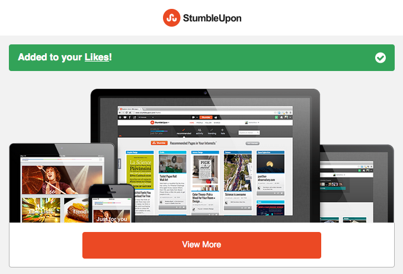
新浪微博 (Sina Weibo)
$networks["sinaWeibo"] = [
"name" => "新浪微博",
"url" => "http://service.weibo.com/share/share.php?",
"query" => [
"url" => $share["postURL"],
"pic" => $share["postImage"],
"title" => $share["postTitle"] . "%0D%0A" . $share["postShortExcerpt"] . $share["postDblCategory"],
],
];
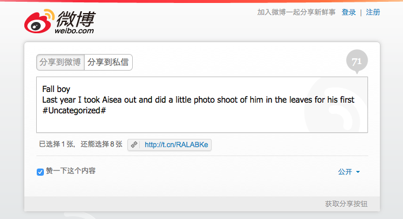
Baidu空间
$networks["baidu"] = [
"name" => "Baidu空间",
"url" => "http://hi.baidu.com/pub/show/share?",
"query" => [
"url" => $share["postURL"],
"title" => $share["postTitle"],
],
];

人人网 (Renren)
$networks["renren"] = [
"name" => "人人网",
"url" => "http://share.renren.com/share/buttonshare?",
"query" => [
"link" => $share["postURL"],
"title" => $share["postTitle"],
],
];
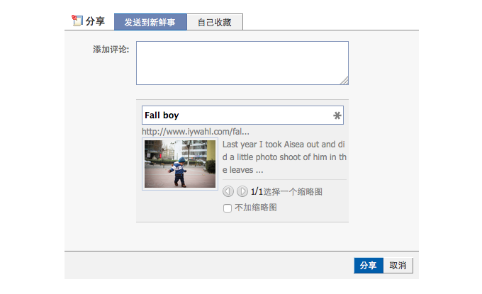
腾讯微博 (QQ Tencent Weibo)
$networks["tencentWeibo"] = [
"name" => "腾讯微博",
"url" => "http://v.t.qq.com/share/share.php?",
"query" => [
"title" => $share["postTitle"] . " " . $share["postShortExcerpt"] . $share["postDblCategory"],
"url" => $share["postURL"],
],
];
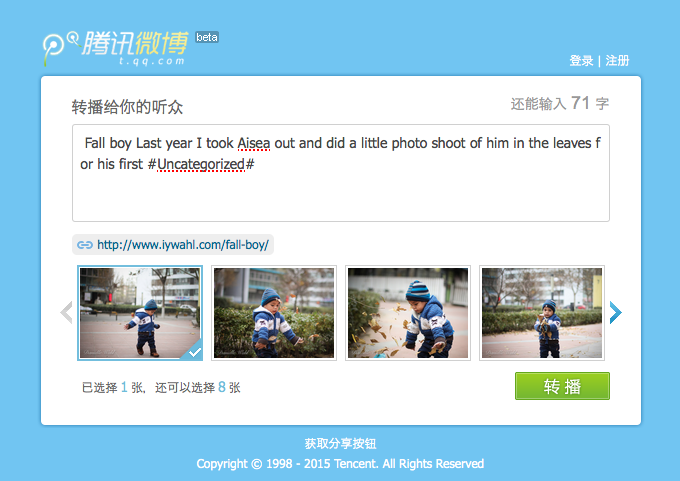
QQ空间
$networks["qzone"] = [
"name" => "QQ空间",
"url" => "http://sns.qzone.qq.com/cgi-bin/qzshare/cgi_qzshare_onekey?",
"query" => [
"title" => $share["postTitle"],
"url" => $share["postURL"],
"summary" => $share["postShortExcerpt"],
],
];
腾讯朋友网 (Pengyou)
$networks["pengyou"] = [
"name" => "腾讯朋友网",
"url" => "http://sns.qzone.qq.com/cgi-bin/qzshare/cgi_qzshare_onekey?",
"query" => [
"to" => "pengyou",
"title" => $share["postTitle"],
"url" => $share["postURL"],
"summary" => $share["postShortExcerpt"],
],
];
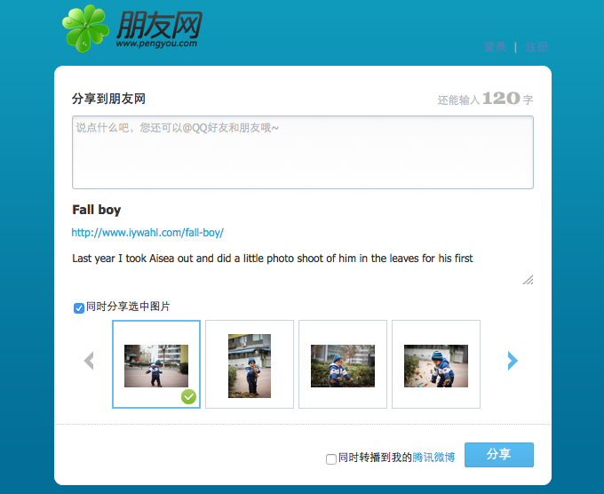
Wow, are you still reading this? Go download shareLinks from github and add it to your theme!